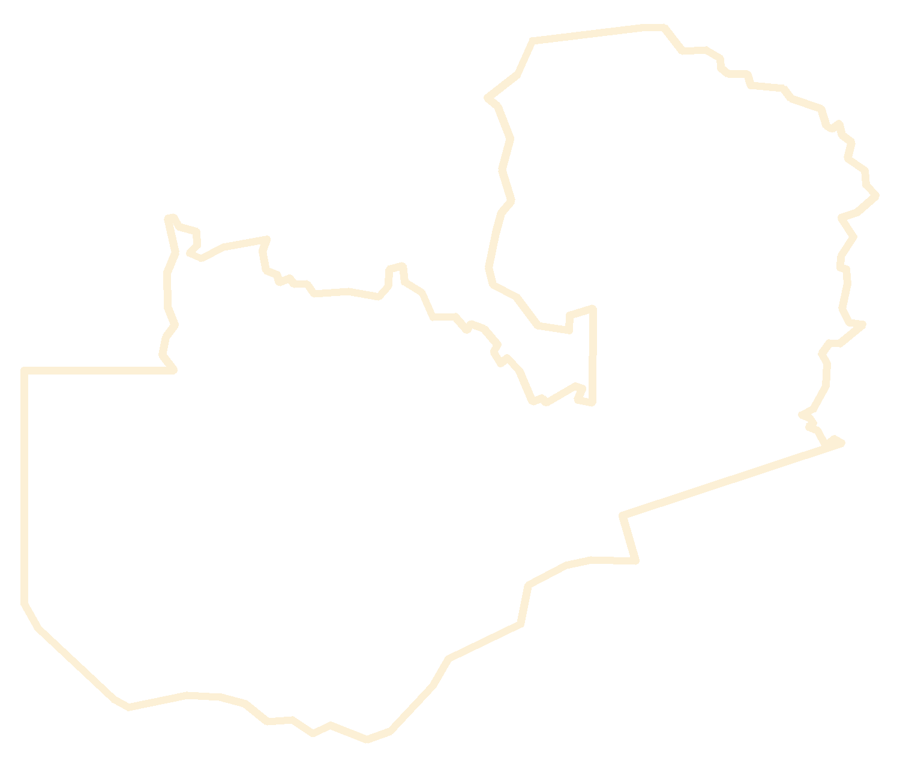

Zambia · Constituency Development Fund
How the Constituency Development Fund is allocated, split, and delivered — from the national budget down to the ground: 10 provinces, 156 constituencies, and every tracked project in between.
The accountability board
Auditor-General's report on the Constituency Development Fund (2024), published October 2026. This board exists so those numbers stay in public view until they improve.
The tracked record
Every project this tracker follows — 1,732 of them — sorted by the status its own published source gives it. Approvals are paper; completions are proof. The distance between the two is the story of CDF delivery.
From the published record only — council lists, commissioning and handover reports, CDFC minutes and tender notices.
Why this reads lower than the Auditor-General’s 63% completed: the Auditor-General physically inspected funded projects from one audit cycle. This record counts everything councils have published — approval lists included — across 2021–2026, and councils publish approvals far more readily than completions. The published record runs behind the ground; the distance between these two numbers is the reporting gap. The two records are never added together — some projects appear in both — so each stands on its own. How to read this tracker →
Kwacha millions per constituency, by budget year. Tap a bar to explore that year.
The jump in 2022 — from K1.6m to K25.7m — is what turned CDF from a small grant into the main driver of local development spending.
For a K40.0m allocation (2026), under the CDF Guidelines.
Up to 5% covers administration. The remaining 95% is divided 60 / 20 / 20. Inside empowerment, 40% is grants and 60% is soft loans.
The map
Every constituency receives the same allocation, so a province's total is its constituency count × the per-constituency amount for the selected year.
Shaded by allocation for the selected year — tap a province to explore it.
Who this is for
The same real numbers, published once, for everyone who has a stake in them. No politics, no parties — just the record, sourced and dated.
Ministries and councils can plan against the record: what was allocated, what was released, what was used, and where delivery stalls — province by province, year by year.
Every constituency's page is its own public account: the allocation, the projects tracked, their status, and the proof of delivery — ready to show, and ready to answer questions with.
Anyone can check what their constituency's share bought — the projects, the money, the photos — and hold the record up against what they see on the ground.
Go deeper
The full tracker, one page per question — follow the money, inspect the projects, model next year's budget, or watch what changed.
How each year's allocation was released and used, what CDF has delivered, and the 57 / 19 / 19 / 5 split.
Follow the money →
Individual CDF projects tracked province by province — each with a budget, a status and the published source it came from.
Inspect the projects →
Model the 2027 budget: set the rate, choose 156 or 226 constituencies, see the national bill.
Run the numbers →
What changed lately: Auditor-General findings, releases, suspensions and policy fights, dated and sourced.
See what changed →